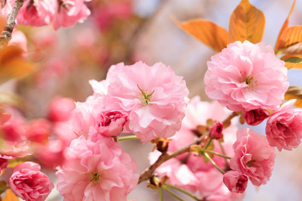

Cerejeira
A árvore
As cerejeiras são árvores frutíferas de clima temperado e originárias principalmente da Ásia. No Brasil, as cerejeiras são espécies introduzidas, e o auge da floração acontece durante o inverno, principalmente entre os meses de julho e início de agosto.
As cerejeiras são árvores decíduas de diversas espécies e cultivares do gênero Prunus e subgênero Cerasus, pertencentes à família Rosaceae. As folhas são ovaladas com margem serrilhadas e antes de caírem, apresentam mudanças gradativas de cor, passando do verde ao amarelado, marrom ou vermelho.
A floração da cerejeira do Japão recebe o nome de Sakura, festejada em sua terra natal ao marcar a chegada da primavera. A flor da cerejeira é um símbolo muito importante para a cultura nipônica, fonte de inspiração para poemas e trabalhos artísticos. O ato de contemplar as flores é chamado Hanami, um costume que mobiliza milhares de pessoas para parques, onde são realizados piqueniques e longos encontros entre familiares e amigos.
A fruta
Cereja
A cereja (Prunus avium) é uma fruta pequena, arredondada, de cor vermelha e com polpa macia e suculenta, que tem a sua origem no continente Asiático. Rica em vitamina A, B e C, além de conter cálcio, ferro, fósforo e proteínas, o fruto da cerejeira é muito apreciado por combater os radicais livres e ajudar na digestão.
A cereja é uma fruta que quando consumida in natura tem propriedades refrescantes, diuréticas e laxativas, e por ser rica em ácido salicílico é indicada no tratamento e combate ao reumatismo, gota, artrite e redução do ácido úrico. É uma fruta pouco calórica que contém muita fibra, o que auxilia no funcionamento do intestino. Com altas concentrações de antocianina, a cereja fresca é considerada um anti-inflamatório natural, prevenindo inflamações e acalmando dores no corpo. As sementes encontradas no interior da fruta têm propriedades vermífugas e diuréticas.
Além de poder ser consumida ao natural, a cereja pode ser ingrediente para a preparação de conservas, compotas, sobremesas, geleias e coquetéis.
Curiosidades
A lenda da Sakura
A flor de cerejeira também permeia lendas e histórias no Japão. Uma das mais famosas conta que a palavra “Sakura”, que em português significa flor de cerejeira, é na verdade o nome da princesa Konohana Sakuya Hime que, ao cair do céu perto do Monte Fuji, teria aterrissado em uma cerejeira e se transformado em uma linda flor.
Seu nome, em japonês, significa “a princesa das árvores das flores abertas”. Outros dizem que o nome da planta tem sua origem no cultivo de arroz e sua divindade, visto que a segunda parte do nome, “kura”, faria referência ao local onde o alimento era armazenado.w
Flores de Cerejeira
A Sakura não se refere a um único tipo de flor, a diversas variedades de flores de cerejeira. Isso porque existem vários tipos de cerejeiras, algumas com fruto comestível (cereja), outros com fruto não comestível e ainda as cerejeiras que não apresentam frutos.
Na verdade, existem mais de 300 variedades de cerejeiras no Japão, e apenas três espécies aqui no brasil, sendo a mais popular a Okinawa. Veja abaixo as espécies mais conhecidas e perceba todas as suas diferenças:
| Cerejeira | Descrição | Imagem |
|---|---|---|
| Somei Yoshino |
Esta espécie é a mais comum no Japão, sendo cultivada desde o período Edo. Elas podem ser vistas primeiro florescendo no final de março em
Kyushu e
Shikoku, no final de abril em
Tóquio, e maio em áreas do norte do país como
Akita e
Aomori. class="intern-nav"class="intern-nav" Ela é uma variedade de flor única, cada uma composta por apenas cinco pétalas, de cor rosa tão pálida, que parecem quase brancas. As flores são agrupadas em cachos, que se abrem antes das folhas da árvore, caindo dentro de uma semana. |
|
| Yamazakura | Yamazakura ou Hill Cherry está entre as flores de cerejeira selvagens mais vistas entre as montanhas do Japão. Como na espécie Yoshino, essas flores também têm cinco pétalas e são rosa claro. Elas se abrem normalmente ao mesmo tempo que as folhas da árvore, entre março e abril na área de Kanto. | |
| Kanzan |
A espécie Kanzan é classificada como um Yaezakura ou “sakura de dupla flor”, uma categoria que inclui qualquer cerejeira de flores com mais de cinco pétalas. Uma Kanzan pode ter de 20 a 50 pétalas, além de serem facilmente reconhecíveis pela sua tonalidade rosa vibrante em cachos volumosos. A árvore cresce entre 8 e 12 metros de altura, por isso, é considerada uma das mais ornamentais dentre as cerejeiras. Suas flores tendem a abrir em meados de abril em Tóquio. |
 |
| Shidarezakura |
Essa espécie é também chamada de Weeping Cherry (Cerejeiras Chorões), pois suas flores ficam caídas nos galhos da árvore. Elas florescem no início da primavera, cerca de uma semana antes do Somei Yoshino. A Shidarezakura mais famosa é o Miharu Takizakura (Cachoeira da Cerejeira Miharu), localizada em Fukushima. A árvore tem mais de 1.000 anos e é uma das cinco grandes cerejeiras do Japão. Além disso, a Shidarezakura é considerada a flor oficial de Kyoto, florescendo no início de abril. |
|
| Outros | 🔗 Diferentes tipos de Cerejeiras | - |